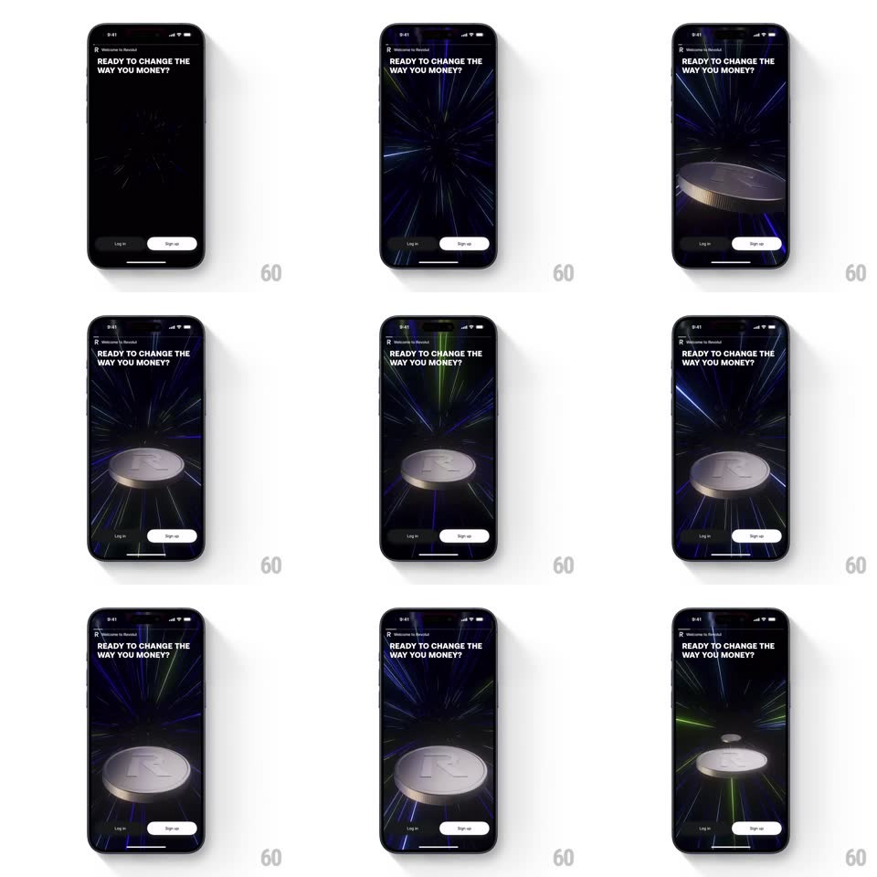

Media
Frame-by-frame

Rebuild this interaction 1:1: Revolut's coin lightspeed loop - on the dark "READY TO CHANGE THE WAY YOU MONEY?" onboarding screen, a silver R coin floats and rotates in 3D over a lightspeed starfield whose light streaks radiate outward from center.

Rebuild this interaction 1:1: Revolut's coin lightspeed loop - on the dark "READY TO CHANGE THE WAY YOU MONEY?" onboarding screen, a silver R coin floats and rotates in 3D over a lightspeed starfield whose light streaks radiate outward from center. ## Integration Integration: stack-agnostic spec - springs given as stiffness/damping, timed motions as duration + curve; map every value to your framework and animation library of choice. ## Scene A near-black screen: "Welcome to Revolut" eyebrow, bold headline "READY TO CHANGE THE WAY YOU MONEY?" top-left, then the hero - a metallic silver coin embossed with the Revolut R, floating center-frame - and black "Log in" / white "Sign up" pills at the bottom. ## Motion spec Pattern: hyperspace starfield + floating 3D coin. - The starfield: thin light streaks (blue, green, white) radiate outward from the screen's center vanishing point - each streak is born small at center and stretches toward the edges (600-900ms per streak, continuous spawn, motion-blurred lines). - The coin floats center: slow rotateY spin (one full turn ~6s, linear) with a gentle bob (translateY +/-8px, 3s ease-in-out loop) and a slight tilt drift (+/-6deg). - The coin is lit by the starfield: specular highlights sweep across the embossed R as it turns; occasionally a green streak passes close and rims the coin's edge. - The whole loop is seamless and ambient - no start or end state while the screen is shown. ## Calibration - Streak speed is fast (crosses half the screen in under a second) - it should read as speed, not rain. - The coin stays the brightest object - the starfield never overpowers it. ## Reduced motion Static starfield image; coin holds a three-quarter pose. ## Don't miss - The streaks converge on the center behind the coin - the coin sits at the vanishing point. - The coin's milled edge catches light separately from its faces.